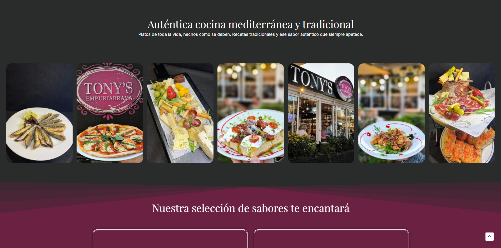
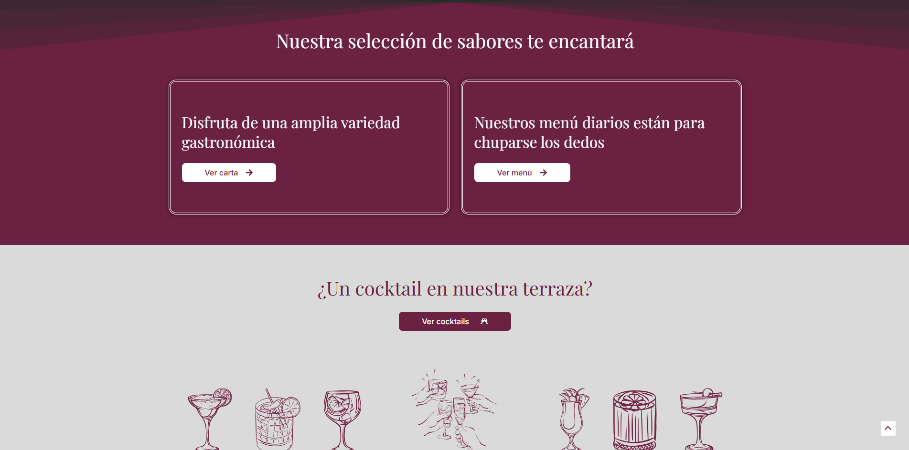
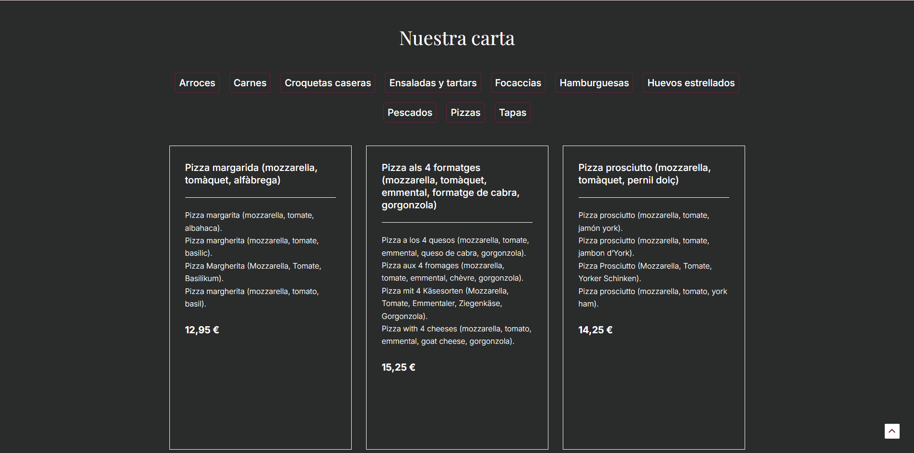

RESTAURANTE TONY'S EMPURIABRAVA
Visitar sitio webTony's es el segundo proyecto desarrollado para el mismo cliente, propietario también de Xenxo's. La confianza depositada para un segundo encargo refleja los resultados del proyecto anterior.
Restaurante Tony's es un referente gastronómico en Empuriabrava con años de historia. Sin embargo, su presencia online era limitada y no reflejaba la calidad ni la variedad de su oferta. Para solucionar este problema, desarrollé una página web enfocada en mostrar su extensa carta, fortalecer su imagen digital y atraer nuevos clientes a disfrutar de la auténtica gastronomía mediterránea.
IDENTIDAD DEL SITIO WEB
La identidad del sitio web nació directamente de la esencia del restaurante. Tony's es un lugar donde la cocina mediterránea tradicional habla por sí sola, y eso era lo que tenía que transmitir la web: sencillez visual sin renunciar a la calidad que hay detrás de cada plato. Se respetó íntegramente la paleta de colores y la imagen de marca existente del restaurante, trasladando su identidad offline al entorno digital de forma coherente.



ESTRUCTURA DE LA INFORMACIÓN
La estructura de la web se diseñó con un objetivo claro: no abrumar. El perfil del usuario que visita Tony's online busca principalmente consultar la carta o conocer el lugar, por lo que toda la información se organizó en torno a esas dos necesidades.
La página de inicio ofrece una visión general del restaurante, estructurada para que el usuario pueda orientarse rápidamente y decidir que necesita consultar.
La carta tiene su propia página exclusiva, con todos los platos organizados por categorías para facilitar la consulta. Y para cerrar el recorrido del usuario, se habilitó una sección de contacto completa: formulario, teléfono, y ubicación señalada de forma explícita, pensando tanto en quien quiere hacer una reserva como en quien simplemente necesita encontrar el restaurante.
RESPONSIVE DESIGN
Al tratarse de una web de restaurante, se ha tenido en cuenta que la mayoría de usuarios accederán desde dispositivos móviles. Por este motivo, el diseño ha sido completamente adaptado a todo tipo de pantallas, garantizando una experiencia de usuario óptima, intuitiva y accesible en cualquier dispositivo. En las categorías de la carta se ha aplicado un sombreado en el borde derecho, con el objetivo de aportar sensación de profundidad y señalar visualmente que existe contenido adicional al deslizar, mejorando así la interacción y la usabilidad.